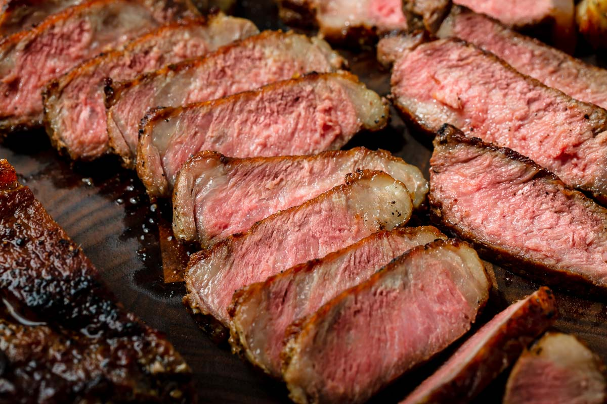
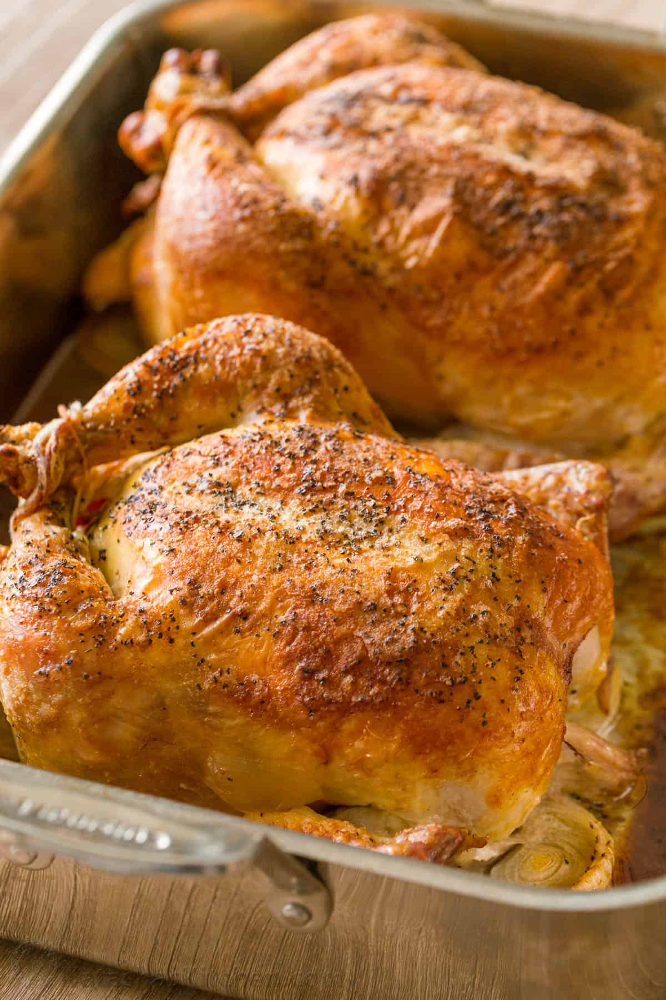
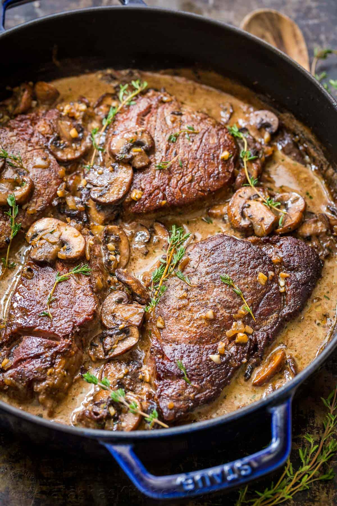
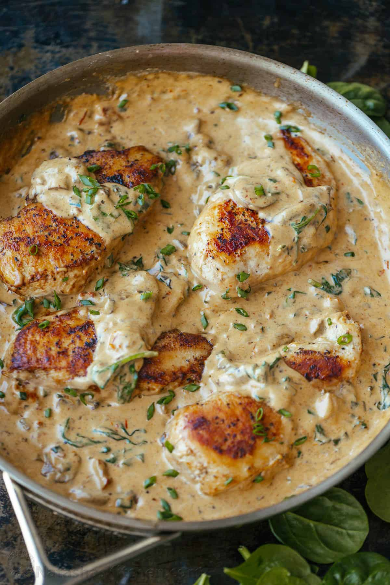

2 tsp freshly grated ginger, or 1/2 tsp
ground ginger
To serve:
Sesame seeds to garnish, optional
Green onion, chopped, optional
Procedure
Grease a large rimmed baking sheet
(cover with foil and then grease for easier
clean-up). Preheat oven to 400˚F.
Combine sauce ingredients and stir until
brown sugar is dissolved.
Place individual salmon slices in a
mixing bowl. Pour the sauce over the salmon, cover
with plastic wrap and let marinate 20 minutes (at
room temp or refrigerated).
Transfer salmon to prepared baking sheet
(keep the marinade). Bake at 400 for 12-16 min or
until salmon is flaky and cooked through, bake times
may vary by thickness of salmon.
While salmon is baking, transfer
remaining marinade to a small sauce pan and bring to
a boil then reduce heat to a simmer and cook,
stirring occasionally until slightly thickened (3-4
min) then remove from heat.
Once salmon is out of the oven, brush
with teriyaki syrup, then sprinkle with chopped
green onion and sesame seeds as desired.
See Recipes

Pan Seared Steak with Garlic Butter
This Pan-Seared Steak
has a garlic butter that makes it taste like a
steakhouse quality meal. You'll be impressed at
how easy it is to make the perfect steak that's
seared on the outside, and perfectly tender
inside..

Whole Roasted Chickens
We love roasting 2
chickens at once. It takes almost the same
amount of time and you can enjoy one for dinner
tonight and use the second for meal prepping the
next few days.

Filet Mignon
This pan-seared Filet
Mignon recipe really and truly is an excellent
way to make filet mignon. Every bite is so
flavorful with that light mushroom wine cream
sauce. Searing the beef makes it melt-in-your
mouth tender.

Creamy Tuscan Chicken
Pair this Tuscan
Chicken with pasta, rice, or mashed potatoes for
an easy weeknight dinner the entire family will
love!